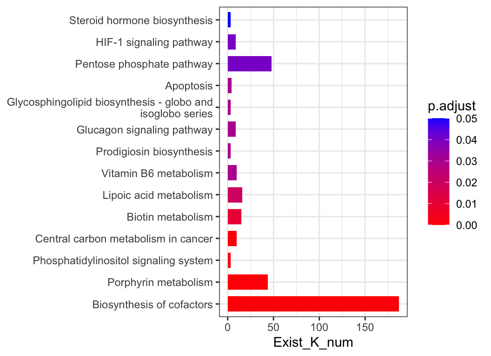

| Category | Method | Tools | Notes |
|---|---|---|---|
| ORA | Hypergeometric test / Fisher’s exact test | DAVID (website), clusterProfiler (R package) | The most common methods used in enrichment analysis. Selecting a list of genes is required. |
| FCS | Gene set enrichment analysis (GSEA) | GSEA (website) | GSEA creatively uses gene ranking, rather than selecting a list of genes, to identify statistically significant and concordant differences across gene sets. |
| FCS | Generalized reporter score-based analysis (GRSA/RSA) | ReporterScore (R package developed in this study) | Find significant metabolites (first report), pathways, and taxonomy based on the p-values for multi-omics data. |
| FCS | Significance Analysis of Function and Expression (SAFE) | safe (R package) | SAFE assesses the significance of gene categories by calculating both local and global statistics from gene expression data. |
| FCS | Gene Set Analysis (GSA) | GSA (R Package) | GSA was proposed as an improvement of GSEA, using the “maxmean” statistic instead of the weighted sign KS statistic. |
| FCS | Pathway Analysis with Down-weighting of Overlapping Genes | PADOG (R package) | PADOGA assumes that genes associated with fewer pathways have more significant effects than genes associated with more pathways. |
| FCS | Gene Set Variation Analysis (GSVA) | GSVA (R package) | A nonparametric, unsupervised method that transforms gene expression data into gene set scores for downstream differential pathway activity analysis. |
| PT | Topology-based pathway enrichment analysis (TPEA) | TPEA (R package) | Integrate topological properties and global upstream/downstream positions of genes in pathways. |
9 Enrichment analysis
Assess the functional significance of your omics data through integrated functional enrichment analysis using ReporterScore. Understand the biological implications of detected features in the context of known pathways and processes.
For more details, refer to ‘C. Peng, Q. Chen, S. Tan, X. Shen, C. Jiang, Generalized Reporter Score-based Enrichment Analysis for Omics Data. bioRxiv [Preprint] (2023). https://doi.org/10.1101/2023.10.13.562235’.
9.1 ReporterScore
Inspired by the classic RSA, we developed the improved Generalized Reporter Score-based Analysis (GRSA) method, implemented in the R package ReporterScore, along with comprehensive visualization methods and pathway databases. GRSA is a threshold-free method that works well with all types of biomedical features, such as genes, chemical compounds, and microbial species. GRSA works in the mixed (classic RSA) and directed modes (enhanced RSA). The directed mode uses signs of the reporter score to distinguish up-regulated or down-regulated pathways, which is more intuitive. Importantly, the GRSA supports multi-group and longitudinal experimental designs, because of the included multi-group-compatible statistical methods. The ReporterScore package also supports custom hierarchical and relational databases (e.g., table containing the correspondence between pathways and genes), providing extra flexibility for advanced users.
The workflow of GRSA in the ReporterScore package is shown in Figure Figure 9.1.

library(ReporterScore)
data("reporter_score_res")
plot_report(reporter_score_res, rs_threshold = 2.5)For convenience, the ReporterScore package provides an interface to the above-mentioned enrichment methods:
gsa_res <- KO_gsa(reporter_score_res, p.adjust.method = "BH", perm = 100)
## perm= 10 / 100
## perm= 20 / 100
## perm= 30 / 100
## perm= 40 / 100
## perm= 50 / 100
## perm= 60 / 100
## perm= 70 / 100
## perm= 80 / 100
## perm= 90 / 100
## perm= 100 / 100
plot_enrich_res(gsa_res)padog_res <- KO_padog(reporter_score_res, p.adjust.method = "none", perm = 100)
## Starting with 316 gene sets!
## Analyzing 193 gene sets with 3 or more genes!
## # of permutations used: 100
## 10 / 100
## 20 / 100
## 30 / 100
## 40 / 100
## 50 / 100
## 60 / 100
## 70 / 100
## 80 / 100
## 90 / 100
## 100 / 100
plot_enrich_res(padog_res)

9.2 KEGG
KEGG BRITE is a collection of hierarchical classification systems capturing functional hierarchies of various biological objects, especially those represented as KEGG objects.
We collected k00001 KEGG Orthology (KO) table so that you can summaries each levels abundance. Use load_KO_htable to get KO_htable and use update_KO_htable to update. Use up_level_KO can upgrade to specific level in one of “pathway”, “module”, “level1”, “level2”, “level3”, “module1”, “module2”, “module3”.
KO_htable <- load_KO_htable()
head(KO_htable, n = 20)| level1_name | level2_name | level3_id | level3_name | KO_id | KO_name |
|---|---|---|---|---|---|
| Metabolism | Carbohydrate metabolism | map00010 | Glycolysis / Gluconeogenesis | K00844 | HK; hexokinase [EC:2.7.1.1] |
| Metabolism | Carbohydrate metabolism | map00010 | Glycolysis / Gluconeogenesis | K12407 | GCK; glucokinase [EC:2.7.1.2] |
| Metabolism | Carbohydrate metabolism | map00010 | Glycolysis / Gluconeogenesis | K00845 | glk; glucokinase [EC:2.7.1.2] |
| Metabolism | Carbohydrate metabolism | map00010 | Glycolysis / Gluconeogenesis | K25026 | glk; glucokinase [EC:2.7.1.2] |
| Metabolism | Carbohydrate metabolism | map00010 | Glycolysis / Gluconeogenesis | K01810 | GPI, pgi; glucose-6-phosphate isomerase [EC:5.3.1.9] |
| Metabolism | Carbohydrate metabolism | map00010 | Glycolysis / Gluconeogenesis | K06859 | pgi1; glucose-6-phosphate isomerase, archaeal [EC:5.3.1.9] |
| Metabolism | Carbohydrate metabolism | map00010 | Glycolysis / Gluconeogenesis | K13810 | tal-pgi; transaldolase / glucose-6-phosphate isomerase [EC:2.2.1.2 5.3.1.9] |
| Metabolism | Carbohydrate metabolism | map00010 | Glycolysis / Gluconeogenesis | K15916 | pgi-pmi; glucose/mannose-6-phosphate isomerase [EC:5.3.1.9 5.3.1.8] |
| Metabolism | Carbohydrate metabolism | map00010 | Glycolysis / Gluconeogenesis | K24182 | PFK9; 6-phosphofructokinase [EC:2.7.1.11] |
| Metabolism | Carbohydrate metabolism | map00010 | Glycolysis / Gluconeogenesis | K00850 | pfkA, PFK; 6-phosphofructokinase 1 [EC:2.7.1.11] |
| Metabolism | Carbohydrate metabolism | map00010 | Glycolysis / Gluconeogenesis | K16370 | pfkB; 6-phosphofructokinase 2 [EC:2.7.1.11] |
| Metabolism | Carbohydrate metabolism | map00010 | Glycolysis / Gluconeogenesis | K21071 | pfk, pfp; ATP-dependent phosphofructokinase / diphosphate-dependent phosphofructokinase [EC:2.7.1.11 2.7.1.90] |
| Metabolism | Carbohydrate metabolism | map00010 | Glycolysis / Gluconeogenesis | K00918 | pfkC; ADP-dependent phosphofructokinase/glucokinase [EC:2.7.1.146 2.7.1.147] |
| Metabolism | Carbohydrate metabolism | map00010 | Glycolysis / Gluconeogenesis | K00895 | pfp, PFP; diphosphate-dependent phosphofructokinase [EC:2.7.1.90] |
| Metabolism | Carbohydrate metabolism | map00010 | Glycolysis / Gluconeogenesis | K03841 | FBP, fbp; fructose-1,6-bisphosphatase I [EC:3.1.3.11] |
| Metabolism | Carbohydrate metabolism | map00010 | Glycolysis / Gluconeogenesis | K02446 | glpX; fructose-1,6-bisphosphatase II [EC:3.1.3.11] |
| Metabolism | Carbohydrate metabolism | map00010 | Glycolysis / Gluconeogenesis | K11532 | glpX-SEBP; fructose-1,6-bisphosphatase II / sedoheptulose-1,7-bisphosphatase [EC:3.1.3.11 3.1.3.37] |
| Metabolism | Carbohydrate metabolism | map00010 | Glycolysis / Gluconeogenesis | K01086 | fbp-SEBP; fructose-1,6-bisphosphatase I / sedoheptulose-1,7-bisphosphatase [EC:3.1.3.11 3.1.3.37] |
| Metabolism | Carbohydrate metabolism | map00010 | Glycolysis / Gluconeogenesis | K04041 | fbp3; fructose-1,6-bisphosphatase III [EC:3.1.3.11] |
| Metabolism | Carbohydrate metabolism | map00010 | Glycolysis / Gluconeogenesis | K01623 | ALDO; fructose-bisphosphate aldolase, class I [EC:4.1.2.13] |
plot_htable(type = "ko")9.3 ARGs & VFs
For convenience, I also included the CARD database from https://card.mcmaster.ca/download/0/broadstreet-v3.2.8.tar.bz2.
CARDinfo <- load_CARDinfo()
my_sankey(count(CARDinfo$ARO_index, `AMR Gene Family`, `Resistance Mechanism`, `Drug Class`), topN = 5)